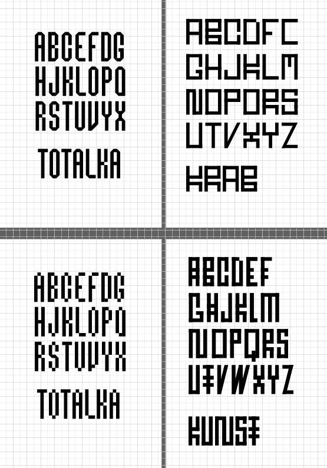

Blokkada je autorský projekt zaměřený na prozkoumávání možností variable fontů. Jedná se o strukturovaně jednoduchý grotesk, který vychází z 3×8 kostičkového gridu. Typickým prvkem jsou jeho dvojené spoje, jež vytvářejí dojem dvojité linky procházející napříč všemi literami — motiv, který font sjednocuje a dává mu charakteristický vizuální rytmus. Jeho ostrá, geometricky čistá konstrukce působí zároveň futuristicky i monumentálně, přičemž netradiční proporce dodávají písmu jemně exotický výraz.

Základ projektu vznikl z experimentů s písmem na čtverečkovaném papíru. Místo tradičních konstrukčních pomůcek, jako jsou elipsy či pomocné linie, jsem využil samotný grid jako stavební princip. Tyto studie jsem následně převedl do digitální podoby – jednak jako způsob, jak se zlepšit v práci s grafickými počítačovými programy, a taky proto, že jednoduchá struktura fontu k tomu přímo vybízela. První verze tak dlouho existovala pouze v souboru Adobe Illustratoru.

Když přišel čas pustit se do vlastního autorského písma, bylo přirozené na tento koncept navázat. Původní návrh měl už poměrně jasnou podobu, a tak jsem se rozhodl posunout jej dál prostřednictvím variable fontu. Cílem bylo nejen naučit se technický proces jeho tvorby, ale i pochopit, jak takový systém funguje.
Po řadě pokusů a omezeních mě dostupného softwaru jsem dospěl k řešení se třemi mastery a sadou interpolovaných variant. Přestože to stále nebyl plnohodnotný variable font, považoval jsem to za důležitý krok vpřed.
K projektu jsem se později vrátil v rámci zkoumání interakce a kódování, kdy jsem se rozhodl font konečně dokončit. Po několika konzultacích jsem ho převedl do programu FontLab, kde je nyní v současné fázi vývoje.
Blokkadu považuji za povedený projekt, přestože zdaleka není uzavřený. Nejsem profesionální typograf a po několika fázích vyhoření jsem se musel smířit s „dostatečně dobrým“ kerningem i dalšími kompromisy.
Během vývoje vznikla i varianta se zakulacenými hranami, kterou bych rád v budoucnu rozpracoval jako další proměnnou. Ačkoliv prozatím font zůstává jen v této verzi, jsem vděčný za čas, který jsem do projektu vložil — a těším se, kam mě tento experiment s písmem ještě zavede.